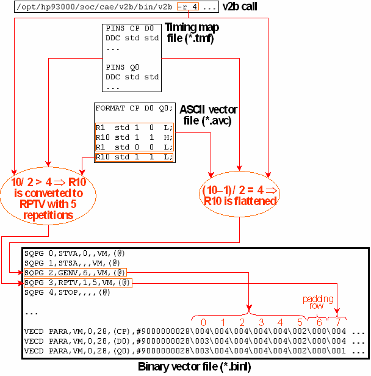

Processing a Repeat Factor > 1
If an ASCII vector file has vectors with a repeat factor n > 1, and the x-mode factor of the pattern is 1, the vector is either flattened into n identical rows of the index array, or translated into an RPTV sequencer instruction which is associated with only one index row and has a repeat parameter value of n. The -r parameter of v2b specifies the highest repeat factor that is flattened; the default is 16.
If the x-mode factor m is > 1, the processing of ASCII vectors with a repeat factor > 1 is more complex. The first point to observe is that such a vector is split if the sum of the previous vectors (counted either from the start of the ASCII vector table or from the last preceding sequencer instruction) is not a multiple of m. Consider, for example, the following start section of an ASCII vector file:
FORMATCP D0 Q0;
R1std10L;
R10std11H;
...
If this file is processed with an x-mode factor of 2, the first index row will be created from10L and from the first instance of the second vector 11H. Only the 9 remaining instances of the second vector are evaluated with respect to the -r parameter.
Furthermore, the -r parameter is compared not to the repeat factor n minus the x instances that were split off, but to (n - x) / m, where m is the x-mode factor. For the example above, this means that the value of the -r parameter is compared to (10 - 1) / 2 = 4 (the remainder is ignored in this calculation). Thus if -r is set to 3, the vector translation will create an RPTV instruction which is associated with only one index row and has a repeat value of 4. This accounts for 8 of the 9 instances; the last instance will be part of the next block of two. If, however, -r is set to 4, then the second vector will be flattened (although 10 / 2 > 4!).
Example
The following example illustrates for an x-mode factor of 2, how the splitting of a vector with a repeat factor > 1 affects the evaluation of the repeat factor:
